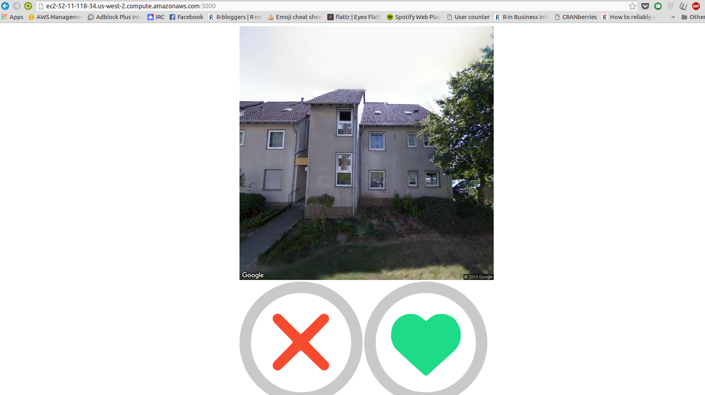

Frankfurt Stadtteilfinder Tinder
Hackfrankfurt
Open Data Day 2016
Frankfurt
- 16 area districts (Ortsbezirke)
- 46 city districts (Stadtteile)
- 118 city boroughs (Stadtbezirke)
… where would you want to live?
Setup
- randomly pick a Frankfurt address
- present the user with a photo of the address
- user "swipes" left ("don't like"), or right ("like")
- store all swipes on the server
- present the "district match", and a heatmap of "district love"
Stadtteilfindertinder

main obstacles faced
- streetnames and numbers very patchy
- bulk-geolocationing was not possible
- no pretty front-end stuff ☹
Happy Stadtteilfindertindering!